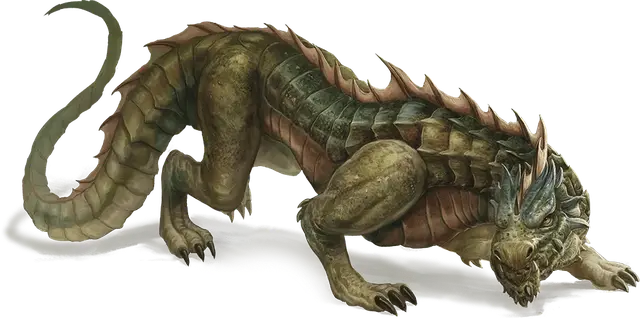

Охотничий дрейк
Ambush Drake
Средний Дракон, без мировоззрения

Класс Доспеха 13
Хиты 22 (4к6 + 8)
Скорость 30 футов
| мод | спас | ||
|---|---|---|---|
| СИЛ | 13 | +1 | +1 |
| ЛОВ | 15 | +2 | +2 |
| ТЕЛ | 14 | +2 | +2 |
| мод | спас | ||
|---|---|---|---|
| ИНТ | 4 | −3 | −3 |
| МДР | 11 | +0 | +0 |
| ХАР | 6 | −2 | −2 |
Навыки Восприятие +4, Скрытность +4
Сопротивление урону яд
Чувства тёмное зрение 60 футов
Языки Драконий
Опасность 1/2 (100 опыта)
Бонус мастерства +2
Особенности
Языки. Понимает Драконий, но не может говорить.
Тактика стаи. Дрейк получает преимущество на броски атаки против существ, если хотя бы один из союзников дрейка находится в пределах 5 футов от цели атаки и дееспособен.
Внезапная атака. Если дрейк застаёт врасплох существо и попадает по нему атакой на протяжении первого раунда боя, цель получает дополнительные 7 (2к6) урона от атаки.
Действия
Укус. . Рукопашная атака оружием: +4 к попаданию, досягаемость 5 футов, одна цель. Попадание: 4 (1к6+1) колющего урона.